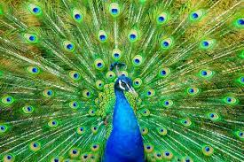
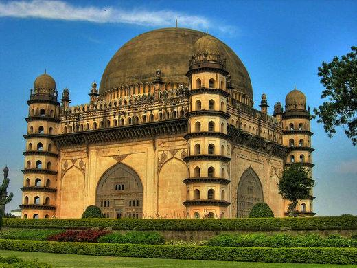
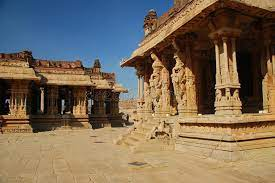
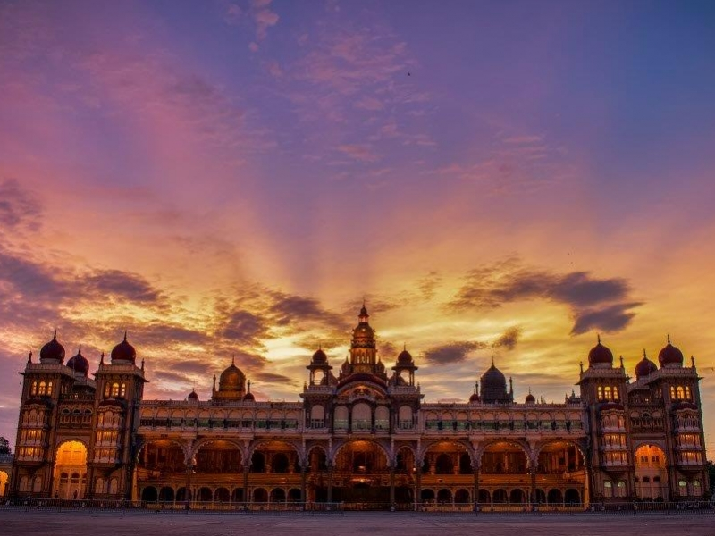

KARNATAKA


Karnataka hosts numerous spots of interest for tourists. There is an array of ancient sculptured
temples, modern cities, scenic hill ranges, forests and beaches. Karnataka has been ranked as the
fourth
most popular destination for tourism among the states of India. Karnataka has the second highest
number
of nationally protected monuments in India.
The districts of the Western Ghats and the southern districts of the state have popular eco-tourism locations including Kudremukh, Madikeri and Agumbe. Karnataka has 25 wildlife sanctuaries and five national parks. Popular among them are Bandipura National Park, Bannerghatta National Park and Nagarhole National Park.
The cave temples at Badami and the rock-cut temples at Aihole representing the Badami Chalukyan style of architecture are also popular tourist destinations. The Hoysala temples at Beluru and Halebidu, which were built with Chloritic schist (soapstone) are proposed UNESCO World Heritage sites. The Gol Gumbaz and Ibrahim Rauza are famous examples of the Deccan Sultanate style of architecture. The monolith of Gomateshwara Bahubali at Shravanabelagola is the tallest sculpted monolith in the world, attracting tens of thousands of pilgrims during the Mahamastakabhisheka festival.
The waterfalls of Karnataka and Kudremukh are considered by some to be among the "1001 Natural Wonders of the World". Jog Falls is India's tallest single-tiered waterfall .
Several popular beaches dot the coastline, including Murudeshwara, Gokarna, Malpe and Karwar. The Shettihalli Rosary Church near Shettihalli, an example of French colonial Gothic architecture, is a rare example of a Christian ruin, is a popular tourist site.
Karnataka has become a center of health care tourism and has the highest number of approved health systems and alternative therapies in India.
The geography and landscape of Karnataka is such that it serves as an ideal destination for diverse and enthralling tourist locations and landmarks.
Located in the midst of Western Ghats, Deccan Plateau and Kannad Coast, Karnataka is home to various forests, beaches, waterfalls, coffee plantations, lakes and all the bounties of nature.
The state also boasts of historically significant monuments and structures that attract visitors from far and beyond. Also culturally diverse and ancient, Karnataka has a historic past and rich heritage for the travelers to explore.
The districts of the Western Ghats and the southern districts of the state have popular eco-tourism locations including Kudremukh, Madikeri and Agumbe. Karnataka has 25 wildlife sanctuaries and five national parks. Popular among them are Bandipura National Park, Bannerghatta National Park and Nagarhole National Park.

The ruins of the Vijayanagara Empire at Hampi and the monuments
of
Pattadakal are
on the list of UNESCO's World Heritage Sites.
The cave temples at Badami and the rock-cut temples at Aihole representing the Badami Chalukyan style of architecture are also popular tourist destinations. The Hoysala temples at Beluru and Halebidu, which were built with Chloritic schist (soapstone) are proposed UNESCO World Heritage sites. The Gol Gumbaz and Ibrahim Rauza are famous examples of the Deccan Sultanate style of architecture. The monolith of Gomateshwara Bahubali at Shravanabelagola is the tallest sculpted monolith in the world, attracting tens of thousands of pilgrims during the Mahamastakabhisheka festival.
Golden 5-storey Mysore Palace building with 21 domed towers and central spire is a beautiful
sight
especially during the night.

The waterfalls of Karnataka and Kudremukh are considered by some to be among the "1001 Natural Wonders of the World". Jog Falls is India's tallest single-tiered waterfall .
Several popular beaches dot the coastline, including Murudeshwara, Gokarna, Malpe and Karwar. The Shettihalli Rosary Church near Shettihalli, an example of French colonial Gothic architecture, is a rare example of a Christian ruin, is a popular tourist site.
Karnataka has become a center of health care tourism and has the highest number of approved health systems and alternative therapies in India.
The geography and landscape of Karnataka is such that it serves as an ideal destination for diverse and enthralling tourist locations and landmarks.
Located in the midst of Western Ghats, Deccan Plateau and Kannad Coast, Karnataka is home to various forests, beaches, waterfalls, coffee plantations, lakes and all the bounties of nature.
The state also boasts of historically significant monuments and structures that attract visitors from far and beyond. Also culturally diverse and ancient, Karnataka has a historic past and rich heritage for the travelers to explore.